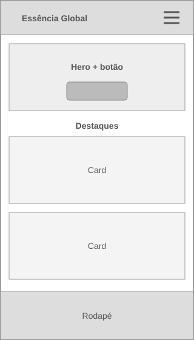
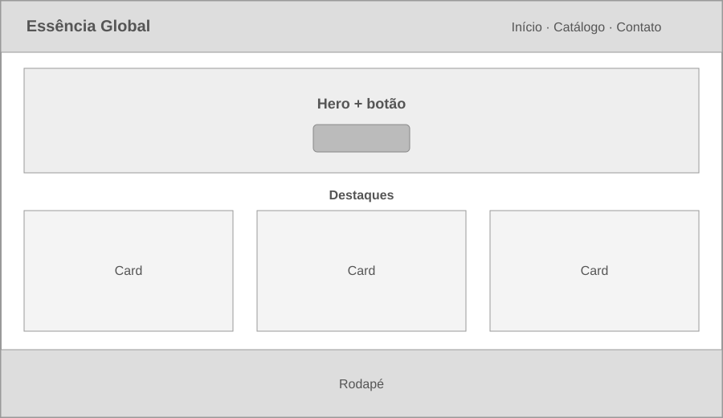

1. Nome do Site
Nome: Essência Global
Motivo: O nome transmite a ideia de um catálogo internacional que reúne as melhores fragrâncias do mundo. É sofisticado e fácil de memorizar.
2. Finalidade do Site
O site funcionará como um catálogo dinâmico de perfumes importados organizados por categorias (Feminino, Masculino e Unissex). Ele oferecerá detalhes sobre as notas olfativas de cada perfume, buscará dados dinâmicos de lançamentos, e fornecerá um formulário interativo para os clientes enviarem dúvidas ou solicitarem encomendas específicas.
3. Cenários
- Cenário 1: "Quais são os perfumes mais bem avaliados ou lançamentos recentes na categoria masculina?"
- Cenário 2: "Como posso entrar em contato com a loja para verificar a disponibilidade de uma encomenda exclusiva?"
4. Esquema de Cores
As cores foram escolhidas para transmitir elegância e modernidade, características essenciais no mercado de perfumaria fina.
- Azul Escuro (#2C3E50): Usado no cabeçalho, rodapé e nos títulos principais (h1, h2, h3).
- Laranja Destaque (#E67E22): Usado em botões de ação (call-to-action), links ao passar o mouse (hover) e bordas de destaque.
- Cinza Claro (#F8F9FA): Usado como cor de fundo geral do site para facilitar a leitura e destacar as imagens dos produtos.
5. Tipografia
- Fonte de Títulos: 'Playfair Display', serif. Aplicada em todos os títulos (h1, h2, h3) para conferir um aspecto editorial, clássico e sofisticado.
- Fonte de Corpo: 'Roboto', sans-serif. Aplicada nos parágrafos, menus de navegação e formulários, garantindo legibilidade e um visual limpo e moderno.
6. Wireframes
Estrutura visual focada na usabilidade antes da aplicação de detalhes de design.
Visualização Mobile (Telas Pequenas)
O layout mobile terá um menu hambúrguer, com os produtos empilhados em uma única coluna vertical para facilitar a rolagem.

Visualização Desktop (Telas Grandes)
O layout desktop exibirá o menu horizontalmente no cabeçalho e utilizará CSS Grid para organizar o catálogo de perfumes em três ou quatro colunas.
